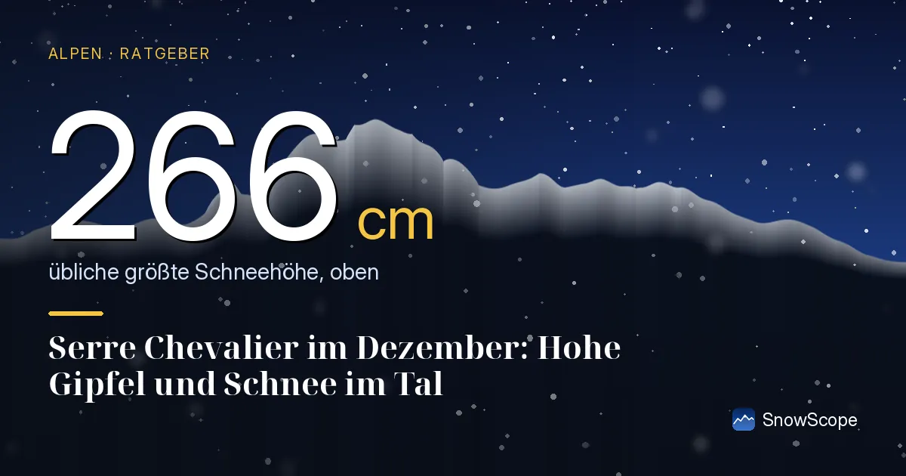

Serre Chevalier im Dezember: Hohe Gipfel und Schnee im Tal
Serre Chevalier ist ein großes Skigebiet in den französischen Alpen mit 157 km markierten Pisten und 70 Liften. Im Dezember variiert die Schneehöhe stark zwischen den hohen Gipfeln und dem Talboden. Wenn du die richtige Woche wählst und dich in der Höhe aufhältst, findest du gute Bedingungen zu einem günstigeren Preis.
Die Live-Schneeprognose für Serre Chevalier in der SnowScope-AppSchneehöhen, Pulverschnee-Alarme und 3D-Karte, gratis.
Der Höhenunterschied von Briançon bis Le Monêtier
Serre Chevalier ist ein langes Tal mit Dörfern und einem markierten Skigebiet, das 157 km Pisten umfasst. Der Berg hat einen großen Höhenunterschied von 1.546 m. Der unterste Lift liegt auf 1.219 m und der höchste Lift erreicht 2.765 m. Das bedeutet, dass es einen riesigen Unterschied bei den Bedingungen zwischen dem Gipfel und dem Tal gibt. Es gibt 70 markierte Lifte, die die verschiedenen Dörfer im Tal verbinden.
In einem normalen Dezember hat die Basis auf 1.219 m 30 cm Schnee. Die Bergstation auf 2.765 m hat jedoch meist 111 cm. Dieser Unterschied ist wichtig für jeden, der einen Trip in der frühen Saison plant. Du findest oft tiefen Schnee am Gipfel, während der Talboden noch wenig Schnee hat. Unsere Schneehistorie zeigt, dass die Basis nur 4 cm haben kann, was in der Saison 2015-16 passierte.

Die richtige Woche für Schnee wählen
Das Timing ist in diesem langen Tal sehr wichtig. Unsere Schneehistorie aus 46 vergangenen Wintern zeigt, dass der Gipfel sehr zuverlässig ist. Ab dem 8. Dezember hat der Gipfel in 100 % der vergangenen Winter 30 cm oder mehr Schnee. Wenn du 50 cm oder mehr am Gipfel willst, passiert das in 87 % der vergangenen Winter zwischen dem 8. und 14. Dezember. Das steigt auf 96 % der vergangenen Winter, oder etwa 9 von 10 Wintern, nach dem 15. Dezember.
Die Mitte des Berges auf 1.992 m ist auch ziemlich sicher. Sie hat in etwa 9 von 10 Wintern während der dritten Dezemberwoche 30 cm oder mehr. Die Basis auf 1.219 m ist schwieriger. In der ersten Dezemberwoche hat die Basis nur in 30 % der vergangenen Winter 30 cm oder mehr. Das verbessert sich auf 67 % der vergangenen Winter bis zur letzten Woche des Monats. Wenn du früh besuchst, solltest du planen, die meiste Zeit auf den höheren Pisten zu verbringen.
Preise in der frühen Saison und aktueller Ausblick
Du kannst Geld sparen, wenn du vor den Weihnachtsferien skifährst. Ein 6-Tage-Skipass für Erwachsene kostet von der Eröffnung bis zum 18. Dezember 2026 276,00 EUR. Wenn du bis zum 19. Dezember 2026 wartest, steigt der Preis für denselben 6-Tage-Pass auf 345,00 EUR. Wenn du in den höher gelegenen Dörfern wohnst, erreichst du leichter die 1.992 m Marke, wo der Schnee beständiger ist.
Wenn man sich den Schnee jetzt am 13. November 2026 ansieht, gibt es 0 cm an der Basis und in der Mitte, aber der Gipfel hat bereits 14 cm. Der Zwei-Wochen-Ausblick für die Mitte des Berges und darüber vom 13. November bis 26. November 2026 zeigt eine Spanne von 69 cm bis 100 cm Neuschnee. Das ist ein positives Zeichen für den Saisonstart.
Vergleich mit den Nachbarn in den Südalpen
Es ist hilfreich, dieses Gebiet mit dem nahegelegenen Vars-Risoul zu vergleichen. Vars-Risoul hat ein markiertes Skigebiet von 131 km Pisten und 38 Liften. Der höchste Lift liegt auf 2.722 m, was etwas niedriger ist als in Serre Chevalier. In einem normalen Dezember hat der Gipfel von Vars-Risoul 77 cm Schnee, während Serre Chevalier 111 cm am Gipfel hat. Serre Chevalier hat auch einen größeren Höhenunterschied von 1.546 m im Vergleich zu 1.090 m in Vars-Risoul.
Bei den Kosten liegt ein 6-Tage-Pass in Vars-Risoul für die Wintersaison bei 298 EUR. Das ist teurer als der Frühsaisonpreis von 276,00 EUR in Serre Chevalier. Am Gipfel von Vars-Risoul liegt die Chance auf 50 cm oder mehr Schnee zwischen dem 8. und 14. Dezember bei 65 %, was niedriger ist als die 87 % Chance in Serre Chevalier. Beide Skigebiete haben eine ähnliche Chance auf 30 cm an der Basis Ende Dezember, mit 74 % für Vars-Risoul und 67 % für Serre Chevalier.
Ein Blick auf den langfristigen Schneetrend
Unsere Schneehistorie zeigt einen interessanten Trend über die letzten 46 Winter. In der Mitte der ersten 15 Winter (1980-81 bis 1994-95) lag die durchschnittliche Schneehöhe im Dezember an der Basis bei 21 cm. In der Mitte der letzten 15 Winter (2011-12 bis 2025-26) stieg dieser Durchschnitt auf 38 cm. In der Mitte des Berges stieg der Durchschnitt von 46 cm auf 63 cm. Am Gipfel stieg er von 92 cm auf 106 cm.
Auch wenn manche Jahre wenig Schnee haben, geht der Gesamttrend für den Dezember-Schnee nach oben. Letzten Winter, im Dezember 2025-26, lag die durchschnittliche Tiefe am Gipfel bei 102 cm, was nahe an der üblichen Tiefe von 111 cm liegt. Der übliche erste dauerhafte Schneetag am Gipfel ist der 05. Oktober, während er an der Basis meist erst am 28. Oktober eintrifft. Dies bestätigt, dass das höhere Gelände der beste Ort für frühe Schwünge ist.
Tipps für Skifahrer
- Buche deinen Trip für die zweite oder dritte Dezemberwoche, um den Passpreis von 276,00 EUR zu erhalten.
- Konzentriere dein Skifahren auf über 1.992 m, wo es eine 93 %ige Chance auf 30 cm Schnee nach dem 15. Dezember gibt.
- Prüfe den Lawinenlagebericht, bevor du abseits der Pisten fährst, besonders wenn der Gipfel seine tiefen Dezember-Werte von 192 cm erreicht.
- Kaufe deinen 6-Tage-Pass vor dem 19. Dezember auf der offiziellen Website, um die Preiserhöhung auf 345,00 EUR zu vermeiden.
Weitere Karten (externe Seiten)
Quellen und Nachweise
- Serre Chevalier, official booking site, ski passes 2026-27 reservation.serre-chevalier.com/achetez-vos-ski-pass-serre-chevalier-et-autres-prestations.html
- Risoul, official ski pass page, Forêt Blanche 2026-27 risoul.labellemontagne.com/fr/hiver/forfaits/risoul-foret-blanche/
- Risoul, official 6-day Forêt Blanche pass page 2026-27 risoul.labellemontagne.com/fr/hiver/forfaits/6-jours-foret-blanche/
- SnowScope, December snow at three heights and today's snow map snowscope.app/
Zu diesen Zahlen
Schneewerte: SnowScope-Schneehistorie, 46 vergangene Winter (1980-81 bis 2025-26) auf drei Höhen jedes Skigebiets (ein höhenkorrigiertes Modell der Vergangenheit: eine Schätzung für eine Fläche, keine Messungen des Skigebiets); Dezemberwerte aus den täglichen Schneehöhen dieser Winter. Aktueller Schnee und Zwei-Wochen-Ausblick: SnowScope-Prognosen (Ausblick aus ECMWF und GFS, eine Spanne, kein Versprechen). Lifte und Pisten: OpenSkiMap-Kartierung. Preise: die offiziellen Seiten unten, gelesen am 2026-11-13; Preise können sich ändern, vor der Buchung prüfen.
Offizielle Lawinenlageberichte: Météo-France – Bulletin d'estimation du risque d'avalanche
Diesen Bericht zitieren
Für Forschung, Lehre oder Presse: Zahlen und Grafiken sind unter CC BY 4.0 mit dieser Quellenangabe frei nutzbar.
SnowScope (2026), Serre Chevalier im Dezember: Hohe Gipfel und Schnee im Tal, https://snowscope.app/blog/de/2026/11/serre-chevalier-december-ski-week-snow-history-2026.html, abgerufen am 2026-11-14
SnowScope (Atlas Labs). (2026, November 14). Serre Chevalier im Dezember: Hohe Gipfel und Schnee im Tal. SnowScope snow reports. https://snowscope.app/blog/de/2026/11/serre-chevalier-december-ski-week-snow-history-2026.html
BibTeX
@misc{snowscope2026serrechevalierdecembersk,
author = {{SnowScope (Atlas Labs)}},
title = {Serre Chevalier im Dezember: Hohe Gipfel und Schnee im Tal},
year = {2026},
month = nov,
howpublished = {\url{https://snowscope.app/blog/de/2026/11/serre-chevalier-december-ski-week-snow-history-2026.html}},
note = {Published 2026-11-14 20:51 UTC; accessed 2026-11-14}
}· CC BY 4.0 · Methoden, Daten und Werkzeuge →
Serre Chevalier: Schnee und Temperatur nach Höhe, dieser Winter vs letzter (Werkzeuge) →
Serre Chevalier folgen
Gratis: eine Nachricht, wenn Neuschnee kommt, und jeden Morgen die Vorhersage.